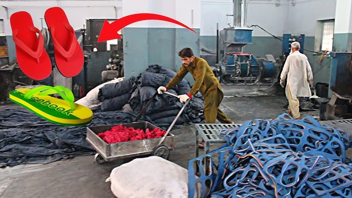
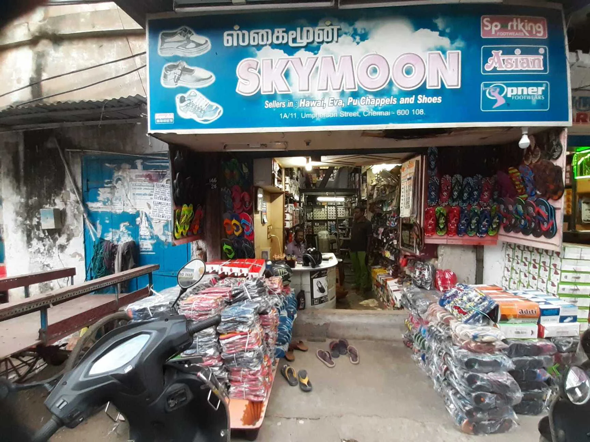

Autobiography of a Hawai Chappal
Imagine the autobiography (2000 words + images) of a Hawai chappal or a pencil, from its conception, manufacturing, delivery, usage to retirement.

Instructions
• Lifecycle journey and interactions with different stakeholders
• Base it on solid research of the lifecycle from design to retirement
• Understand the processes through research, not just fiction
• Use the journey map approach to identify critical touchpoints
• Combine your creativity (fiction) with known typical processes in the supply chain of a Hawai Chappal or a pencil (from procurement of raw material to the delivery to the end user)
• Do not just present the autobiography but also present the ‘making of the autobiography’
• Account for the elements and principles of design in the autobiography
Week 1: Research, Plot and draft
Week 2: Final submission
Week 1 : Research, Plot and draft
Research: Understanding the Lifecycle of a Hawai Chappal
1. Conception and Design
The Hawai chappal is designed for functionality, affordability, and mass appeal. It embodies simplicity and durability.
Predominantly uses natural rubber or synthetic alternatives like EVA foam for lightweight and flexible properties.
A minimalistic sole-and-strap design prioritizing user comfort and ease of manufacturing.
2. Manufacturing
Rubber sourced from plantations (e.g., Kerala, India) or synthesized in industrial settings.
Rubber is processed, shaped, and cured into a durable sole.
Straps are attached to pre-molded soles through punching and pinning mechanisms.
Quality Control Ensures durability and uniformity in mass production.
3. Distribution
Packed in bulk and transported via trucks to regional distributors. Sold through wholesalers, street vendors, and stores catering to low-cost markets.
4. Usage
Popular across diverse demographics for its affordability, durability, and versatility.
Anecdotes include beach walks, monsoon adventures, and everyday errands.
5. End-of-Life
Often discarded in landfills due to non-biodegradable materials.
Some chappals are repurposed into mats, craft items, or industrial material.
Synthetic rubber may contribute to microplastic pollution.
Stakeholder Interactions
.avif)
1. Rubber Farmers
Extract raw latex, often facing fluctuating market rates.
2. Factory Workers
Operate machines, assemble components, and conduct quality checks.
3. Distributors and Retailers
Ensure the chappals reach end-users, often navigating low-margin sales.
4. End-Users
Embrace the chappal for its simplicity, durability, and emotional connection.
Journey Mapping